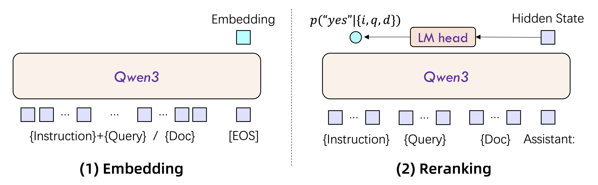
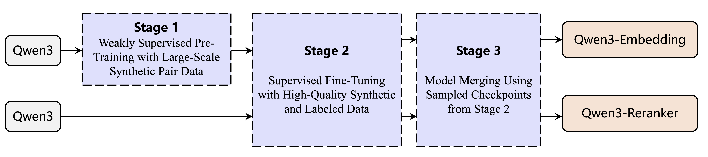

Advancing Text Embedding and Reranking Through Foundation Models
这篇技术报告把三件事拧成一条流水线：① 让 Qwen3 大模型自己合成约 1.5 亿条多语言训练对做大规模弱监督预训练，② 再用高质量标注 + 筛选过的合成数据做有监督微调，③ 最后用 slerp（球面线性插值）把多个检查点「融合」成更稳健的模型。基于 Qwen3 基座，做出 0.6B/4B/8B 的嵌入与重排两类模型，在 MTEB 多语言、代码检索等榜单上达到 SOTA，并全部开源。
在读细节之前，先记住整篇论文真正的新意只有这三点——其余都是把它们工程化落地的配套。
不再从问答论坛 / 论文里「捡」弱监督数据，而是让基座模型按任务、语言、长度、难度可控地直接生成。
大规模弱监督预训练 → 高质量有监督微调 → slerp 模型融合，逐级提升泛化与稳健性。
嵌入模型取末位 token 隐状态、指令感知；重排模型用 LLM 逐条判 yes/no 打分。
文本嵌入（embedding）把句子映射成向量，让机器能用相似度衡量语义关系；重排（reranking）则在候选集里把最相关的结果顶到前面。两者是搜索、问答、推荐的地基，而 RAG 与智能体（agent）的兴起，又对它们提出了更高的要求。
核心思想很统一：给定查询 q、文档 d，再加一条任务指令 I，模型要做的就是「在这条指令定义的相似性标准下，判断 q 和 d 有多相关」。训练数据因此组织成 {I, q, d⁺, d⁻₁ … d⁻ₙ}——一个正样本，多个负样本。
难点在于：要同时做到可扩展（多语言、多任务、多领域）、长上下文理解，以及与具体下游任务对齐。其中最卡脖子的，是高质量、覆盖广的训练数据从哪来。
从 BERT 等 encoder-only 模型，到近年基于 LLM 的嵌入模型（GTE、E5、BGE 系列），多阶段训练早已是惯例：先在大规模含噪弱监督数据上预训练，再用小规模高质量数据微调。但弱监督数据的来源一直是软肋。
这正是 Qwen3 Embedding 相对前作 GTE-Qwen 系列的关键跃迁：把「数据从哪来」从被动采集，变成主动、可控的合成。
嵌入与重排都在做「任务感知的相关性评估」，但落地方式不同。两类模型都用 Qwen3 稠密版基座初始化，共三种规格（0.6B / 4B / 8B），借此继承它的文本建模与指令遵循能力。下图左为嵌入模型，右为重排模型。

{Instruction} {Query}<|endoftext|>，文档侧保持原样不加指令。这样向量是「指令感知」的——同一句话在不同任务下可得到不同表示。[EOS] token，取最后一层、该 [EOS] 位置的隐状态作为最终句向量。yes / no。一句话：嵌入模型是「编码成一个向量再比相似度」，重排模型是「让 LLM 当裁判逐条打分」，共享同一基座但目标不同。
查询输入格式：
取最后一层 [EOS] 隐状态为句向量；支持 MRL（可裁剪自定义维度）与 32K 上下文。
相关性分数由 yes/no 的概率归一化得到：
套 chat 模板，system 提示「只能回答 yes 或 no」。
各规格的层数、上下文、向量维度等配置如下（仅嵌入模型有固定向量维度，重排模型输出的是分数）：
| 类型 | 模型 | 参数 | 层数 | 上下文 | 向量维度 | MRL | 指令感知 |
|---|---|---|---|---|---|---|---|
| 嵌入 | Qwen3-Embedding-0.6B | 0.6B | 28 | 32K | 1024 | ✓ | ✓ |
| Qwen3-Embedding-4B | 4B | 36 | 32K | 2560 | ✓ | ✓ | |
| Qwen3-Embedding-8B | 8B | 36 | 32K | 4096 | ✓ | ✓ | |
| 重排 | Qwen3-Reranker-0.6B | 0.6B | 28 | 32K | — | — | ✓ |
| Qwen3-Reranker-4B | 4B | 36 | 32K | — | — | ✓ | |
| Qwen3-Reranker-8B | 8B | 36 | 32K | — | — | ✓ |
这是全文最重要的一张图。嵌入模型走三步：合成数据弱监督预训练 → 高质量有监督微调 → 模型融合；重排模型则跳过第一步，只做有监督微调 + 融合。

箭头方向即数据流向：合成数据先喂给弱监督预训练，筛选后的精华再进入微调，最后多检查点融合定型。
基座模型直接造对，按任务/语言/长度/难度可控生成，替代社区采集。
因合成质量极高，从中筛出精华混入第二阶段有监督微调，再提泛化。
融合多个微调检查点，跨数据分布更稳健（借鉴 Li et al. 2024）。
嵌入模型用改进版 InfoNCE 对比损失：在正样本对之外，把 K 个难负例、批内其他查询、批内其他文档都当负例。其精巧之处在于一个掩码因子 m_ij——当某个「负例」的相似度反而超过正例 0.1 以上（很可能是假负例）时，把它从分母里屏蔽掉，避免模型被错误信号带偏。重排模型则用直接的 SFT 损失：最大化正确标签（yes/no）的概率。
掩码因子是缓解假负例污染的关键设计——批内随机抽到的「负例」其实可能与查询高度相关，直接当负例会误导训练。
合成数据是整套方法的发动机。以检索任务为例，论文用「文档 → 查询」的两阶段流水线：先给文档配置「提问者画像」，再据此生成查询。这样造出的查询更像真实用户会问的问题。
取自 Qwen3 基座的预训练语料，作为文档来源。
从 Persona Hub 检索 Top-5 相关角色，由 LLM 定 Character / Question_Type / Difficulty。
按配置再指定长度、语言，生成可检索到该文档的查询。
提问类型涵盖关键词、事实、摘要、判断等多个维度，叠加长度、难度、语言的组合，保证了数据的多样性与真实性。最终产出 约 1.5 亿条弱监督对；再用一个简单标准——余弦相似度 > 0.7——从随机采样中筛出 约 1200 万条高质量对进入第二阶段。
阶段 1 · 配置（Configuration）
阶段 2 · 查询生成（Query Generation）
角色（Character）来自 Persona Hub（Ge et al. 2024），为每篇文档检索最相关的 5 个候选角色注入「用户视角」，是提升查询多样性的关键一招。
| 阶段 | 数据来源 | 规模 |
|---|---|---|
| 弱监督预训练 | 纯合成数据（Qwen3-32B 生成） | ~150M |
| 有监督微调 | 人工标注：MS MARCO、NQ、HotpotQA、MIRACL、MLDR、CodeSearchNet 等 | ~7M |
| 筛选后的高质量合成数据（cos > 0.7） | ~12M |
评测覆盖 MMTEB 下的 216 个任务（131 多语言 + 41 英文 v2 + 32 中文 CMTEB + 12 代码检索）。最亮眼的结论是：旗舰 Qwen3-Embedding-8B 在 MTEB 多语言与代码检索上超过此前最强的闭源模型 Gemini-Embedding；而最小的 0.6B 也已逼近顶尖基线。
MTEB 多语言（Mean by Task）上的对比，可看出三档模型的梯度与对闭源的反超：
| 模型 | 参数 | MTEB 多语言 |
|---|---|---|
| multilingual-e5-large-instruct | 0.6B | 63.22 |
| gte-Qwen2-7B-instruct | 7B | 62.51 |
| Gemini Embedding（闭源） | — | 68.37 |
| Qwen3-Embedding-0.6B | 0.6B | 64.33 |
| Qwen3-Embedding-4B | 4B | 69.45 |
| Qwen3-Embedding-8B | 8B | 70.58 |
重排：用 Qwen3-Embedding-0.6B 先召回 Top-100，再用各重排模型精排。三个 Qwen3-Reranker 都优于嵌入直检与所有基线重排器，Qwen3-Reranker-8B 在多数任务上比 0.6B 提升约 3.0 分。
以 0.6B 在 MMTEB 上的成绩拆解，去掉合成数据弱监督或去掉模型融合，分数都明显下滑——印证了这两步的价值：
| 设置（Qwen3-Embedding-0.6B） | MMTEB |
|---|---|
| 仅用合成数据（无后续阶段） | 58.49 |
| 去掉合成数据弱监督 | 61.21 |
| 去掉模型融合 | 62.56 |
| 完整版（弱监督 + 微调 + 融合） | 64.33 |
结论：大规模合成数据弱监督预训练 + slerp 模型融合，是 Qwen3 Embedding 取得强泛化的两大支柱；任一缺失都会让最终分数明显回落。
Qwen3 Embedding 证明了一条务实路线：让基座大模型既当骨架、又当数据工厂——用它可控地合成海量训练对，配合多阶段训练与模型融合，就能把 0.6B/4B/8B 的嵌入与重排模型推到 SOTA，并且 0.6B 这种小模型也足够实用。所有模型以 Apache 2.0 开源，便于社区直接使用与二次开发。